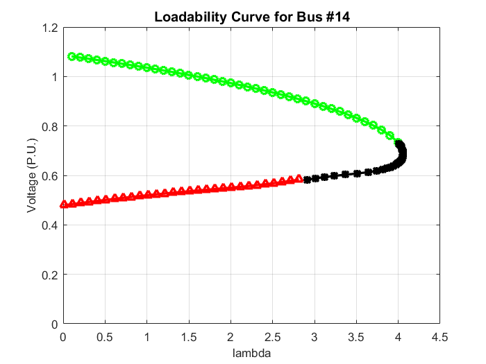

Contents
- *Step 1: Load PV Data from File*
- *Step 3: Integrate PV at Bus 3*
- CPF Setup
- Compute Scheduled Power Values
- CPF - Phase 1: Using Load Change as Continuation Factor
- CPF - Phase 2: Changing the Continuation Parameter to Voltage at a Bus
- CPF - Phase 3: Reverting the Continuation Parameter Back to Power
- Plot Loadability Curve
% CPF with PV Integration clc; clear all; close all; % Read system data (this should load BusData and BranchData) ReadData;
*Step 1: Load PV Data from File*
load('PVData.mat', 'P_pv', 'Q_pv'); % Load saved PV power values
*Step 3: Integrate PV at Bus 3*
%P_pv = 120e6; % PV Active Power (W) %Q_pv = 40e6; % PV Reactive Power (VAR) S_base = 100e6; % System Base Power P_pu = P_pv / S_base; Q_pu = Q_pv / S_base; % Adjust BusData: reduce the load at Bus 3 by the PV generation BusData(3,7) = BusData(3,7) - P_pu; % Adjust real power demand BusData(3,8) = BusData(3,8) - Q_pu; % Adjust reactive power demand fprintf('PV System added at Bus 3: P = %.2f MW, Q = %.2f MVAR\n', P_pv, Q_pv);
PV System added at Bus 3: P = 3101.20 MW, Q = 1501.98 MVAR
CPF Setup
maxiterations = 100; tolerance = 1e-3; % Calculate Ybus using BusData and BranchData Ybus = Calculate_Ybus(BusData, BranchData); % Reorder the buses to line them up as Slack, PV, and PQ buses posPV = BusData(:,4) == 2; % Logical index for PV buses posSL = BusData(:,4) == 3; % Logical index for Slack buses aux1 = (1 - posPV - posSL); aux1(aux1 == 1) = transpose(1:length(aux1(aux1 == 1))); auxPos = [transpose(1:length(posPV)) posPV + posSL aux1]; N = max(BusData(:,1)); % ---- BEGIN: Setting Voltage and Angle (flat start) for Slack and PV buses --- V = ones(N,1); d = zeros(N,1); % Initialize all voltage angles to zero % Set initial voltage magnitudes from BusData for Slack and PV buses V(posSL + posPV == 1) = BusData(posSL + posPV == 1, 5); % ---- END: Setting Voltage and Angle ---
Compute Scheduled Power Values
Net scheduled power injections (generation minus load)
Psch = BusData(:,9) - BusData(:,7); Qsch = BusData(:,10) - BusData(:,8); % Reduced scheduled power for non-Slack buses Pschred = Psch(posSL == 0); Qschred = Qsch((posSL + posPV) == 0); % Reduced voltage magnitude and angle vectors dred = d(posSL == 0); Vred = V((posSL + posPV) == 0); % K matrix: column vector of scheduled PQ values K = [Pschred; Qschred]; tolerance = 1e-3; maxiterations = 25; % --- USER INPUT: WHICH BUS CPF TO DO? --- BusForCPF = 14; % ----------------------------------------
CPF - Phase 1: Using Load Change as Continuation Factor
sigma = 0.1; % Predictor step size lambda = 0; % Initialize continuation parameter Y_Vph1 = []; X_LamdaPh1 = []; while true % Predictor Step: form the state vector [dred; Vred; lambda] d_V_L = [dred; Vred; lambda]; [~, J] = Jacobian_NRLF(Ybus, V, d, posSL, posPV); % Calculate Jacobian matrix ek = [zeros(1, size(J,2)) 1]; % Row vector with zeros and 1 at the end K = [Pschred; Qschred]; % Scheduled power vector JKe = [J -K; ek]; % Update state vector using the predictor step d_V_L = d_V_L + sigma * (JKe \ ek'); dred = d_V_L(1:length(dred)); d(posSL == 0) = dred; Vred = d_V_L(length(dred) + (1:length(Vred))); V(posSL + posPV == 0) = Vred; lambda = d_V_L(end); % Corrector Step: Newton-Raphson load flow solution [V, d, Pcalc, Qcalc, dP, dQ, dPred, dQred, dPdQred, temp] = ... NRLF(V, d, Ybus, lambda * Psch, lambda * Qsch, posSL, posPV, tolerance, maxiterations); if temp < maxiterations Y_Vph1 = [Y_Vph1; V(BusForCPF)]; X_LamdaPh1 = [X_LamdaPh1; lambda]; Last_d = d; Last_V = V; Last_LamdaPh1 = lambda; else % If NR does not converge, revert to the last converged iteration d = Last_d; V = Last_V; lambda = Last_LamdaPh1; dred = d(posSL == 0); Vred = V((posSL + posPV) == 0); break; end end
CPF - Phase 2: Changing the Continuation Parameter to Voltage at a Bus
sigma = 0.005; % Smaller predictor step size Last_Lamda = Last_LamdaPh1; Y_Vph2 = []; X_LamdaPh2 = []; while true % Predictor Step d_V_L = [dred; Vred; lambda]; [~, J] = Jacobian_NRLF(Ybus, V, d, posSL, posPV); ek = [zeros(1, length(dred) + length(Vred)) 0]; % Set the bus voltage as the continuation variable for BusForCPF ek(length(dred) + auxPos(BusForCPF,3)) = -1; JKe = [J -K; ek]; ZerosOne = [zeros(length(dred) + length(Vred), 1); 1]; % Update state vector d_V_L = d_V_L + sigma * (JKe \ ZerosOne); dred = d_V_L(1:length(dred)); d(posSL == 0) = dred; Vred = d_V_L(length(dred) + (1:length(Vred))); V(posSL + posPV == 0) = Vred; lambda = d_V_L(end); disp('Predictor step -- [lambda value -- voltage at bus]'); disp([lambda, V(BusForCPF)]); % Corrector Step: adjustment via the Newton-Raphson method [~, J] = Jacobian_NRLF(Ybus, V, d, posSL, posPV); [Pcalc, Qcalc, dP, dQ, dPred, dQred, dPdQred] = ... Calculate_PcalcQcalc(V, d, Ybus, lambda * Psch, lambda * Qsch, posSL, posPV); RHS = [dPdQred; 0]; JPh2 = [J -lambda * K; ek]; dddVredL = JPh2 \ RHS; % Update state variables with the correction d(posSL == 0) = d(posSL == 0) + dddVredL(1:N-1); V(posSL + posPV == 0) = V(posSL + posPV == 0) + dddVredL(N:length(dddVredL)-1); lambda = lambda + dddVredL(end); dred = d(posSL == 0); Vred = V((posSL + posPV) == 0); Y_Vph2 = [Y_Vph2; V(BusForCPF)]; X_LamdaPh2 = [X_LamdaPh2; lambda]; if lambda > Last_Lamda Last_Lamda = lambda; LastV = V(BusForCPF); end if lambda <= 0.75 * Last_LamdaPh1 % changefactor condition break; end end
Predictor step -- [lambda value -- voltage at bus]
4.0097 0.7280
Predictor step -- [lambda value -- voltage at bus]
4.0190 0.7230
Predictor step -- [lambda value -- voltage at bus]
4.0278 0.7180
Predictor step -- [lambda value -- voltage at bus]
4.0357 0.7130
Predictor step -- [lambda value -- voltage at bus]
4.0427 0.7080
Predictor step -- [lambda value -- voltage at bus]
4.0485 0.7030
Predictor step -- [lambda value -- voltage at bus]
4.0531 0.6980
Predictor step -- [lambda value -- voltage at bus]
4.0563 0.6930
Predictor step -- [lambda value -- voltage at bus]
4.0580 0.6880
Predictor step -- [lambda value -- voltage at bus]
4.0581 0.6830
Predictor step -- [lambda value -- voltage at bus]
4.0565 0.6780
Predictor step -- [lambda value -- voltage at bus]
4.0529 0.6730
Predictor step -- [lambda value -- voltage at bus]
4.0472 0.6680
Predictor step -- [lambda value -- voltage at bus]
4.0392 0.6630
Predictor step -- [lambda value -- voltage at bus]
4.0286 0.6580
Predictor step -- [lambda value -- voltage at bus]
4.0151 0.6530
Predictor step -- [lambda value -- voltage at bus]
3.9983 0.6480
Predictor step -- [lambda value -- voltage at bus]
3.9775 0.6430
Predictor step -- [lambda value -- voltage at bus]
3.9518 0.6380
Predictor step -- [lambda value -- voltage at bus]
3.9203 0.6330
Predictor step -- [lambda value -- voltage at bus]
3.8810 0.6280
Predictor step -- [lambda value -- voltage at bus]
3.8312 0.6230
Predictor step -- [lambda value -- voltage at bus]
3.7663 0.6180
Predictor step -- [lambda value -- voltage at bus]
3.6787 0.6130
Predictor step -- [lambda value -- voltage at bus]
3.5602 0.6080
Predictor step -- [lambda value -- voltage at bus]
3.4257 0.6030
Predictor step -- [lambda value -- voltage at bus]
3.2900 0.5980
Predictor step -- [lambda value -- voltage at bus]
3.1701 0.5930
Predictor step -- [lambda value -- voltage at bus]
3.0565 0.5880
Predictor step -- [lambda value -- voltage at bus]
2.9515 0.5830
CPF - Phase 3: Reverting the Continuation Parameter Back to Power
sigma = 0.1; % Reset predictor step size Y_Vph3 = []; X_LamdaPh3 = []; while true % Predictor Step d_V_L = [dred; Vred; lambda]; [~, J] = Jacobian_NRLF(Ybus, V, d, posSL, posPV); ek = [zeros(1, size(J,2)) -1]; K = [Pschred; Qschred]; JKe = [J -K; ek]; d_V_L = d_V_L + sigma * (JKe \ abs(ek)'); dred = d_V_L(1:length(dred)); d(posSL == 0) = dred; Vred = d_V_L(length(dred) + (1:length(Vred))); V(posSL + posPV == 0) = Vred; lambda = d_V_L(end); % Corrector Step [V, d, Pcalc, Qcalc, dP, dQ, dPred, dQred, dPdQred, temp] = ... NRLF(V, d, Ybus, lambda * Psch, lambda * Qsch, posSL, posPV, tolerance, maxiterations); if temp < maxiterations && lambda >= 0 Y_Vph3 = [Y_Vph3; V(BusForCPF)]; X_LamdaPh3 = [X_LamdaPh3; lambda]; else break; end end
Plot Loadability Curve
figure; plot(X_LamdaPh1, Y_Vph1, '-og', X_LamdaPh2, Y_Vph2, '-*k', X_LamdaPh3, Y_Vph3, '-^r', 'LineWidth', 2) xlabel('lambda', 'FontSize', 10) ylabel('Voltage (P.U.)', 'FontSize', 10) title(strcat('Loadability Curve for Bus #', num2str(BusForCPF)), 'FontSize', 12) grid on xlim([0 4.5]) ylim([0 1.2])
